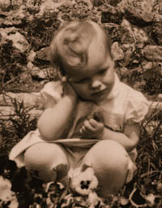

Manuela Blank
Nach dem Studium der Germanistik und Romanistik arbeitete ich elf Jahre als Konzertmanagerin. Anschließend war ich fünf Jahre lang im PR-Bereich tätig.
Während dieser Zeit wurde mir klar, dass meine tatsächliche Berufung in meiner seit 30 Jahren gelebten Passion liegt: der Arbeit mit komplementären Heilmethoden. Angeregt dazu wurde ich auch durch die Erfahrungen mit meinen beiden Kindern.
Seit 2001 arbeite und lehre ich ausschließlich in diesem Bereich. Ausgebildet wurde ich unter anderem von Selena Rodriguez in der Tradition der Curanderos (schamanische Meisterheiler) von Mexiko, Tom Kenyon und Prof. Todd Ovokaitys.
Ich bin dankbar, froh und glücklich, mich für diesen Weg entschieden zu haben, auf dem ich meine Fähigkeiten mit Freude und Liebe am wirkungsvollsten einsetzen kann.
Mit verschiedenen Heilmethoden unterstütze und begleite ich Sie auf Ihrem Weg zu Gesundheit, Kraft und Lebensfreude.